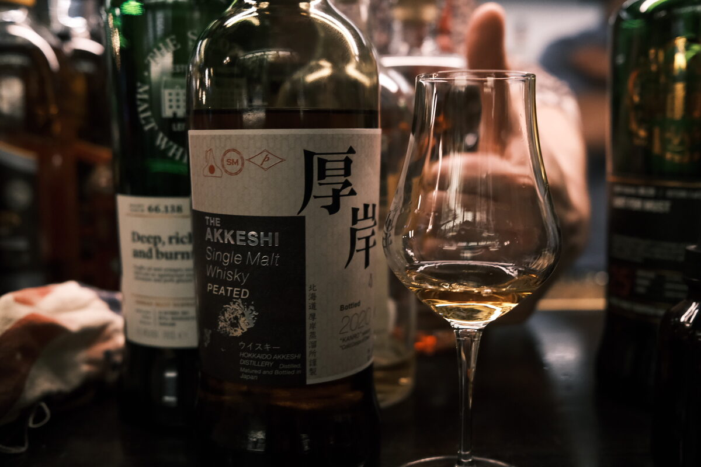

Akkeshi "Kanro" 55% (bottled 2020)
Apparently a vatting of bourbon, sherry, wine, and Mizunara casks. This is the 2020 bottling, titled “cold drops of dew”. Prepare to feel a few cold drops of dew in the morning on account of the cost of this bottle.
Colour Amber.
Nose Bananas, caramel, burnt fruit. Dark chocolate. Woody. Ripe berries and fruit jams. Malt. Maltesers! A waft of cloves. Incensed, perfumed. With water, the chocolate-wood-perfume nexus becomes stronger… if I could try future bottlings, is this a distillery character? Some rubber.
Palate Very bright. Lemon juice, lemon curd, candied lemons. Woody pears, really quite elegant. Floral. Malty. Thick and creamy mouthfeel, oily. With water, chocolate coated berries and fruits of all kinds. Pineapple.
Finish Mulled wine, herbaceous, woody smoke… delicate peat. Earthy, there’s some minerality here. Oranges. With water, the peat is bolder, woody, billowing smoke. Still quite a sweet and bright edge.
Comments Chocolate, citrus, elegant peat. Terrific first outing. 87/100.

Posted by Dominic on 14 Jun 2021